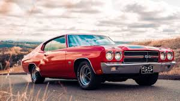
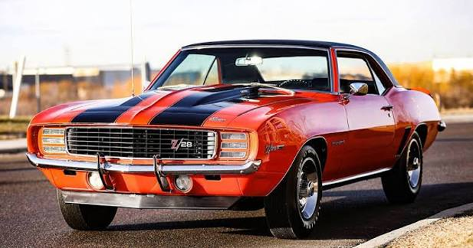

Explore our recent restorations and custom builds.


The client brought in a shell that had been sitting in a field for 20 years. Major rust issues in the floor pans, quarters, and trunk. No drivetrain, interior stripped.
A full frame-off, rotisserie restoration. The goal wasn’t just to restore it, but to build a modern-driving muscle car with classic looks.
Media blasting revealed extensive rust. We replaced all sheet metal from the firewall back, powder-coated the frame, installed QA1 suspension, and dropped in a Chevy Performance 572 big block.
A 700+ horsepower show winner that drives beautifully on the street and tears up the track.
The owner wanted a modern-driving Mach 1 without losing the classic fastback look. The car had tired suspension, fading paint, and an underpowered 351.
We designed a full pro‑touring build: modern suspension, upgraded braking, a stroked 408W small block, and a complete interior refresh.
We stripped the car to the shell, reinforced the chassis, installed coilovers, swapped in a 408 stroker, and refreshed the interior with new upholstery and gauges.
The Mach 1 now drives like a modern performance car — tight steering, strong braking, and over 500 horsepower.
The client wanted a factory‑correct Z28 restoration suitable for shows and auctions. The car had mismatched parts and incorrect paint codes.
We performed a meticulous factory‑spec restoration, sourcing date‑correct components and restoring the car to its original Le Mans Blue.
We decoded the trim tag, verified drivetrain numbers, sourced correct DZ‑302 components, and repainted the car in its original color.
The finished Z28 scored 97/100 at its first judged event and is now considered one of the cleanest examples in the region.